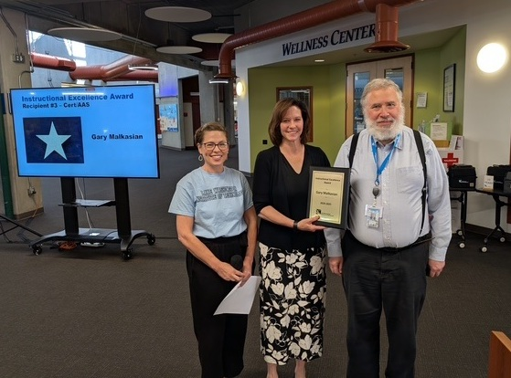
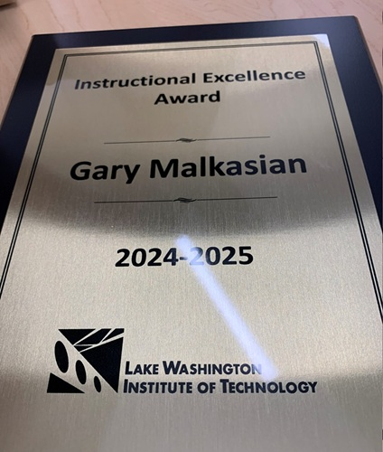
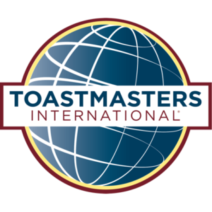

Professors are nominated by their students for this award. For 2024-25, there were 99 nominees. Four winners selected, one from each of the degree programs: Certificate, Associate, Bachelor, and Bachelor of Applied Science (BAS).
Before calling my name the presenter said, "We don't usually give this award to adjuncts, especially to one so new - but he had four pages of nominations." To say I was floored was an understatement. It is truly humbling and an honor to receive this recognition from my students.

Presidents Distinguished Area Award is the highest level award given to an Area, based on the growth and accomplishments of its member clubs. I was honored to be the Area Director of Area 55, the only area to be so recognized in District 2.
Presidents Distinguished Club Award is the highest level award given to a Toastmasters club, based on the growth and accomplishments of its members. I was honored to be the President of the PSE Galvanizers during one of the years our club won this award.
Editor of open educational resource for teaching an upper-division introductory database course. Developed simultaneous with and to be used by CS 320 at Lake Washington Institute of Technology, where I teach. Expected release date: Spring 2027.
Collection of tools and resources for teaching computer science concepts. Created as a class project.